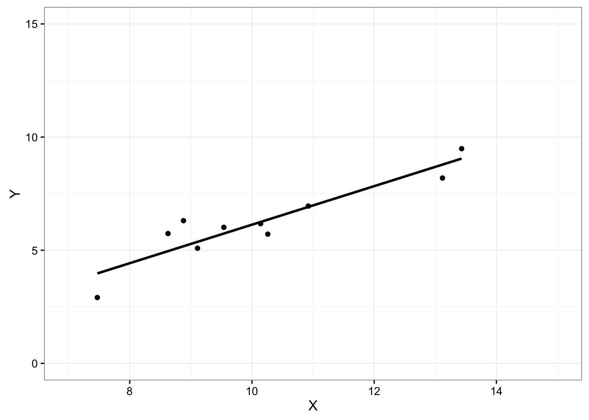
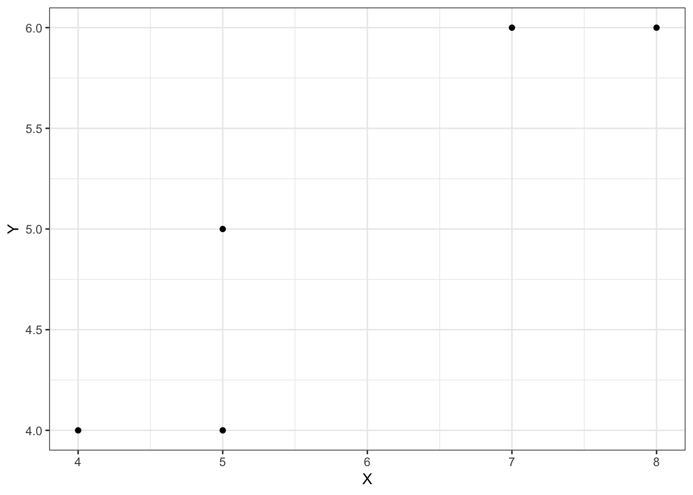

- 回帰係数の算出方法を理解する
- データに対して回帰直線を当てはめる
結果変数(目的変数): 説明・予測される変数(Y)
原因変数(説明変数): 説明・予測する変数(X)
テストの得点(Y)を勉強時間(X)で説明するにあたって、ここでは、一次関数\(\displaystyle y=a+bx\)を利用する
\(\displaystyle テストの得点(y)=a+b\times 勉強時間(x)\)

回帰直線: この一次関数から得られる直線
切片(a): 説明変数が最小の場合のYの値
傾き(b): 回帰直線の傾き
\(\displaystyle D=\sum_{i=1}^n\varepsilon_i^2=\sum_{i=i}^2\{y_i-(a+bx_i)\}^2\)
残差: \(\varepsilon_i(i=1,\dots, n)\)
図の赤線が残差
残差の二乗和が最小二乗基準(D)
最小二乗基準を、切片(a)と回帰係数(b)について偏微分し導出される方程式を整理していくことで、最終的に、以下のように、簡単に算出される。
\(\displaystyle 回帰係数(傾き:b)=\frac{XとYの共分散}{Xの分散}\)
\(\displaystyle 切片(a)=Yの平均-回帰係数(b)\times Xの平均\)
\(D\)(最小二乗基準)を、切片(a)と傾き(b)について偏微分し、ともに0とする
\[ \left\{ \begin{eqnarray} \displaystyle \frac{\partial D}{\partial a}=-2\sum_{i=i}^n\{y_i-(a+bx_i)\}&=&0\tag{2.1} \\ \displaystyle \frac{\partial D}{\partial a}=-2\sum_{i=i}^n\{y_i-(a+bx_i)\}&=&0\tag{2.2} \end{eqnarray} \right. \]
これにより、次の方程式が得られる。
\[\left\{ \begin{eqnarray} \displaystyle \sum_{i=1}^n{y_i}&=&na+b\sum_{i=i}^n x_i\tag{1} \\ \displaystyle \sum_{i=1}^n{x_i}{y_i}&=&a\sum_{i=i}^n x_i+b\sum_{i=i}^1 x_i^2\tag{2} \end{eqnarray} \right. \]
これにより回帰係数(b)が以下で求められる
\[ \begin{eqnarray} \displaystyle b&=&\frac{n\sum_{i=1}^n x_i y_i-\sum_{i=1}^n x_i \sum_{i=1}^n y_i}{n\sum_{i=1}^n {x_i}^2-(\sum_{i=1}^n {x_i}^2)} \\ \displaystyle &=&\frac{n\sum_{i=1}^n (x_i-\bar{x})(y_i-\bar{y})}{n\sum_{i=1}^n( x_i-\bar x)} \\ \displaystyle &=&\frac{S_{xy}}{S_x^2} \end{eqnarray} \]
2.2式の両辺を\(n\)で割ると\(\bar{y}=a+b\bar{x}\)となり \(y-\bar{y}=b(x-\bar{x})\) が得られる
よって、以下で切片(b)が求められる
\(a=\bar{y}-b\bar{x}\)
| ペア番号 | \(x_i\) | \(y_i\) | \((x_i-\bar{x})(y_i-\bar{y})\) | \(n( x_i-\bar x)\) |
|---|---|---|---|---|
| 1 | \(x_1\) | \(y_1\) | \((x_1-\bar{x})(y_1-\bar{y})\) | \(n( x_1-\bar x)\) |
| 2 | \(x_2\) | \(y_2\) | \((x_2-\bar{x})(y_2-\bar{y})\) | \(n( x_2-\bar x)\) |
| \(\vdots\) | \(\vdots\) | \(\vdots\) | \(\vdots\) | \(\vdots\) |
| \(\vdots\) | \(\vdots\) | \(\vdots\) | \(\vdots\) | \(\vdots\) |
| 5 | \(x_n\) | \(y_n\) | \((x_n-\bar{x})(y_n-\bar{y})\) | \(n( x_n-\bar x)\) |
| 合計 | \(S_x\) | \(S_y\) | \(A\) | \(B\) |
| 平均 | {x} | {y} |
(問) 4,8,10,12,16の平均\(\bar{x}\),分散\(S^2\), 標準偏差\(s\)を求めよ (答) 平均\(\bar{x}=10\),分散\(S^2=16\), 標準偏差\(s=4\)を求めよ
平均 \[ \begin{eqnarray} \displaystyle \bar{x} &=& \frac{1}{n}n\sum_{i=1}^n x_i \\ \displaystyle &=&\frac{4+8+10+12+16}{5} \\ \displaystyle &=&\frac{50}{5} \\ &=&10 \end{eqnarray} \]
分散 \[ \begin{eqnarray} \displaystyle \S^2 &=& \frac{1}{n}n\sum_{i=1}^n (x_i-\bar{x})^2 \\ \displaystyle &=&\frac{(4-10)^2+(8-10)^2+(10-10)^2+(12-10)^2+(16-10)^2}{5} \\ \displaystyle &=&\frac{80}{5} \\ &=&16 \end{eqnarray} \]
標準偏差 \[ \begin{eqnarray} \displaystyle \S &=& \sqrt{S^2} \\ \displaystyle &=&\sqrt{16} \\ \displaystyle &=&4 \\ &=&16 \end{eqnarray} \]
(問) A, B2クラスのそれぞれ40名の数学の得点を調べ、次の度数分布表を作成した。各クラスの平均,分散, 標準偏差を求めよ。
(答) A, B2クラスのそれぞれ40名の数学の得点を調べ、次の度数分布表を作成した。各クラスの平均,分散, 標準偏差を求めよ。
平均 \[ \begin{eqnarray} \displaystyle \bar{x} &=& \frac{1}{n}n\sum_{i=1}^n x_i^*f_i \\ \displaystyle &=&\frac{35\times 1+45\times 4+55\times 6+65\times 18+75\times 7+85\times 3+95\times 1}{40} \\ \displaystyle &=&\frac{2590}{40} \\ &=&64.75 \end{eqnarray} \]
分散 \[ \begin{eqnarray} \displaystyle s^2 &=& \frac{1}{n}n\sum_{i=1}^n (x_i^*-\bar{x})^2 \\ \displaystyle &=&\frac{(35-64.75)^2\times 1+(45-64.75)^2\times 4+(55--64.75)^2\times 6+(65--64.75)^2\times 18+(75--64.75)^2\times 7+(85--64.75)^2\times 3+(95\times 1}{40} \\ \displaystyle &=&\frac{5897.5}{40} \\ &=&147.438 \end{eqnarray} \]
標準偏差 \[ \begin{eqnarray} \displaystyle s &=& \sqrt{s^2} \\ \displaystyle &=&\sqrt{147.438} \\ \displaystyle &=&12.142 \end{eqnarray} \]
平均 \[ \begin{eqnarray} \displaystyle \bar{y} &=& \frac{1}{n}n\sum_{i=1}^n y_i^*f_i \\ \displaystyle &=&\frac{35\times 0+45\times 1+55\times 7+65\times 25+75\times 5+85\times 2+95\times 0}{40} \\ \displaystyle &=&\frac{2600}{40} \\ &=&65 \end{eqnarray} \]
分散 \[ \begin{eqnarray} \displaystyle s^2 &=& \frac{1}{n}n\sum_{i=1}^n (y_i^*-\bar{y})^2 \\ \displaystyle &=&\frac{(35-64.75)^2\times 0+(45-64.75)^2\times 1+(55--64.75)^2\times 7+(65-64.75)^2\times 25+(75-64.75)^2\times 5+(85-64.75)^2\times 2+(95\times 0}{40} \\ \displaystyle &=&\frac{2400}{40} \\ &=&60 \end{eqnarray} \]
標準偏差 \[ \begin{eqnarray} \displaystyle s &=& \sqrt{s^2} \\ \displaystyle &=&\sqrt{60} \\ \displaystyle &=&7.746 \end{eqnarray} \]
2変量\((x,y)\)を測定し、以下の結果を得た。平均、分散、標準偏差を求め、共分散、相関を求めよ。
共分散 \[ \begin{align} S_{xy}=\frac{1}{n}\sum_{i=1}^n (x_i-\bar{x})(y_i-\bar{y}) \end{align} \]
社会人15人の1年間の実収入と食費支出の関係を調べ以下のデータを得た。この表をもとに回帰係数を算出し、回帰直線を図示せよ。
社会人15人の1年間の実収入と食費支出の関係を調べ以下のデータを得た。この表をもとに回帰係数を算出し、回帰直線を図示せよ。
\[ \begin{eqnarray} \displaystyle 回帰係数(傾き:b)&=&\frac{XとYの共分散}{Xの分散} \\ \displaystyle &=&\frac{108225}{602250} \\ \displaystyle &=&0.180 \end{eqnarray} \]
\[ \begin{eqnarray} \displaystyle 切片(a)&=&Yの平均-回帰係数(b)\times Xの平均$ \\ \displaystyle &=&203-0.18\times 695$ \\ \displaystyle &=&78.103$ \end{eqnarray} \]
回帰直線: \(y=78.108+0.180x\)
Copyright © 2018 竹林由武. All rights reserved.